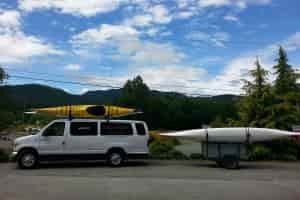
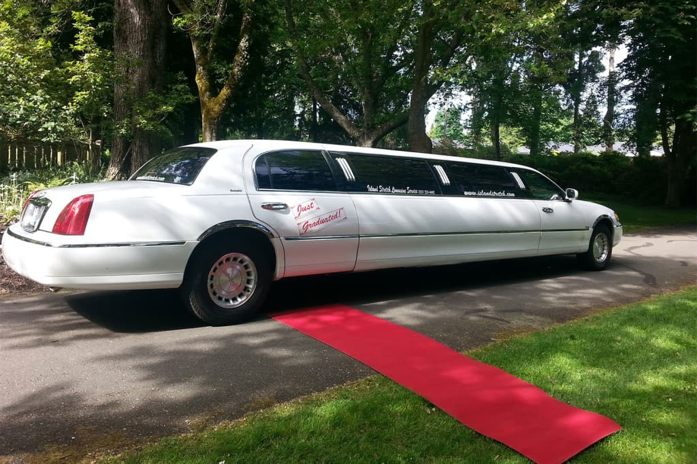
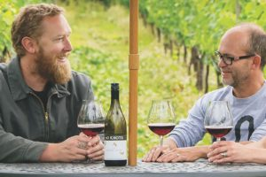

About Us
Ambassador Transport provides shuttle service to and
from the Comox Valley Airport (YQQ) and custom
ground transportation on the East coast of North central Vancouver
Island, BC. It is a leading transportation company dedicated to
providing reliable, efficient, and sustainable solutions for both
individuals and businesses. Specializing in a wide range of services,
from freight transport to passenger travel, we cater to diverse needs
across local, national, and international markets. Our core
values—reliability, safety, sustainability, innovation, and customer
focus—guide everything we do. We prioritize timely, dependable
service, ensuring the highest safety standards while minimizing our
environmental impact through green practices. Embracing the latest
technology, we aim to continuously enhance the customer experience and
improve operational efficiency.We are committed to shaping the future
of transportation with a customer-centric approach, driving progress
and innovation across the industry.

shuttle
The Shuttles Tour is an employee engagement initiative that
promotes team spirit and collaboration through exciting
shuttle-related challenges and activities. It's a fun way to build
camaraderie and improve communication within the workplace.It's an
engaging way to highlight the company's transportation offerings
while providing a comfortable and enjoyable travel experience.

Limousine
The Limousine Tour offers employees a luxurious and unique way to
experience premium transportation services. It's a team-building
event that combines relaxation, networking, and appreciation for
the company's high-end offerings. Whether for corporate outings,
special celebrations, or exclusive client experiences, the
limousine tour provides an upscale, comfortable way to travel in
style.

WineTour
The Wine Tour offers employees a premium experience, combining
scenic travel with exclusive visits to local wineries. It's a
unique team-building opportunity to relax, network, and enjoy the
finest wines in a luxurious setting. This event combines the
company's transport expertise with an opportunity to explore wine
regions, enjoy tastings, and foster relationships in a relaxed,
enjoyable setting.
Why Choose Us?
Reliable and Timely Service:
Our company is committed to providing punctual and dependable
transportation solutions, ensuring that you reach your destination on
time, every time. Whether it's a shuttle, limousine, or group tour, we
prioritize reliability in all our services.
Wide Range of Fleet Options:
We offer a diverse fleet of vehicles tailored to meet the specific
needs of our clients, from luxury limousines to efficient shuttles.
Whatever your transportation requirements, we have the perfect vehicle
to ensure a comfortable, safe, and enjoyable experience.
Customer-Focused Experience:
At our company, customer satisfaction is our top priority. Our
professional drivers and support team go above and beyond to provide
exceptional service, ensuring a seamless, hassle-free experience for
every client, whether for business, events, or personal travel.
LEARN MORE